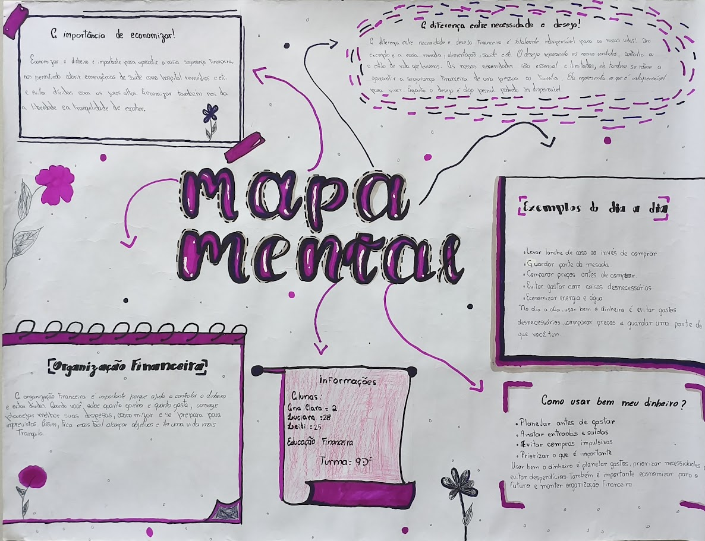
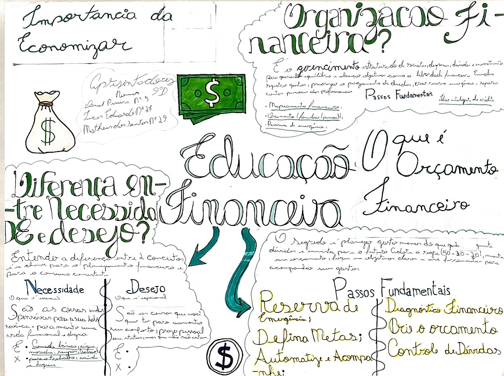
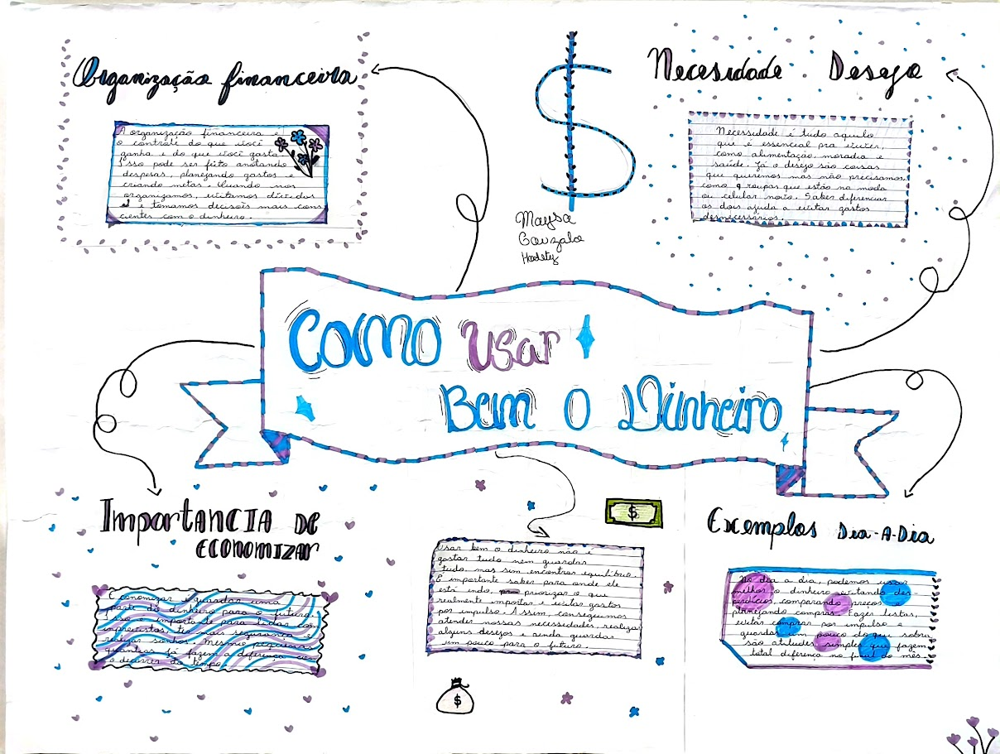
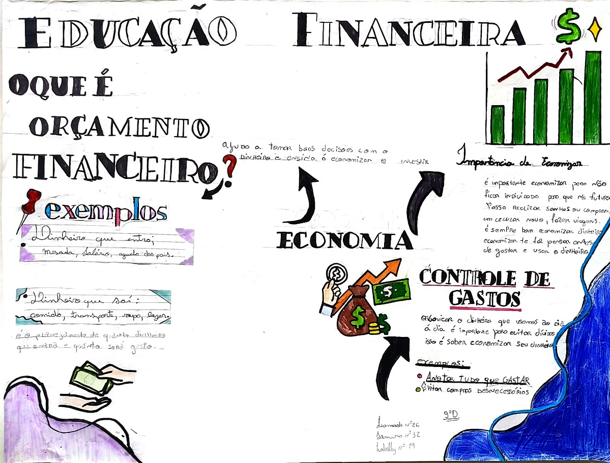

Meu dinheiro, minhas escolhas
Nota do professor: os cartazes apresentados pela turma mostram boa compreensão dos conceitos centrais da Educação Financeira. Alguns trabalhos apresentaram erros de conteúdo e de organização visual, mas esses pontos foram destacados durante a apresentação e corrigidos coletivamente em sala.
No conjunto, os cartazes revelam pesquisa, participação e capacidade de transformar ideias em exemplos do cotidiano. A atividade serviu para identificar orçamento, diferenciar necessidade de desejo, entender a importância da poupança e perceber que controlar gastos é uma atitude de responsabilidade.
Regra 50:30:20: metade do dinheiro deve ser destinada às necessidades, 30% aos desejos e 20% à poupança ou investimento.



